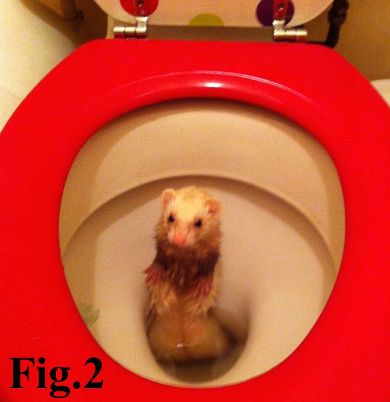
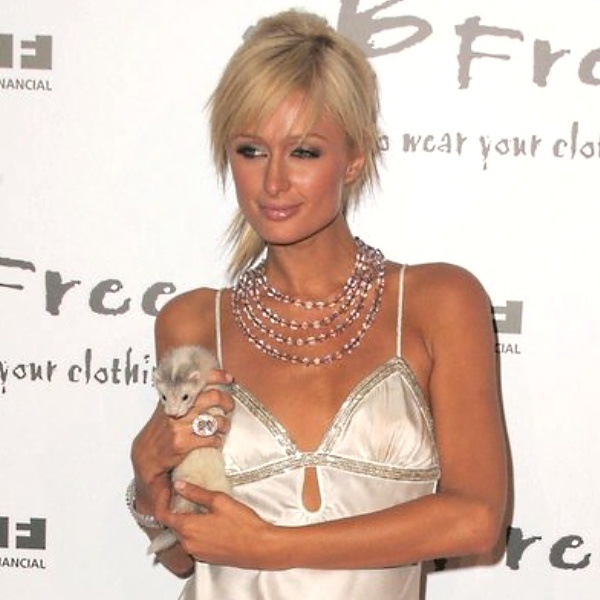

Anyone who has spent even a minimal amount of time in Philadelphia knows that the wild ferret problem has reached epidemic levels. Everywhere you turn you see a stray ferret. Walk down any alley and you get screamed at by a ferret from behind a dumpster. Remove any manhole cover and you will witness dozens of ferrets crawling on top of each other. Open your delivery pizza box and will be greeted by a ferret eating off all the pepperoni.
Their slender form and ability to breathe underwater for hours lets them navigate your plumbing and show up in the most unexpected places where they can cause serious damage when feeling threatened or when their sensitive olfactory glands are overwhelmed. (See Fig. 2 for deeper understanding)
For many residents, especially in South Philly, the solution has been to exterminate the ferrets via poison traps or flame-thrower. We believe in a different, more humane, solution.
Philly Rescue Ferrets is a 501(c)3 non-profit organization dedicated to saving Philadelphia’s homeless and abandoned population of Ferrets and Chinese ferrets. P.R.F. is the city’s only no-kill shelter that focuses all of it’s efforts on the growing ferret problem plaguing Philadelphia. We are working every day to make Philadelphia a place where ferrets feel safe and loved; with a roof over their heads and pepperoni in their food bowls.
Our efforts are based out of a mobile headquarters floating on the Schuylkill River, safe from the possible ferret uprising, but our many remote locations house hundreds of ferrets, in very well ventilated basements, awaiting their adoption.
Philly Rescue Ferrets is entirely funded by Will Smith’s kids. The generosity of the junior Smiths is maximized by a highly qualified staff, an engaged Board of Ferreters, frequent media appearances, and widespread community backing. Donations to P.R.F. are tax-deductible to the fullest extent allowed by law and can be included on aplications to dating websites.

Celebrity Endorsements
Paris Hilton
'Umm, I was like terrified of rats and things like that. Things that don't smell good, you know? I mean, you know. But then I visited Philly Rescue Ferrets and I really think they had a great smell to them. Since I was so 'devastated' when my Chihuahua Tinkerbell died I went and adopted 2 ferrets, Dolce and Gabbana! Dolce didn't last but Gabbana still smells realy good! So hot.'
Harry Anderson
'Even though my hit television series Night Court took place in New York, what most people don't know is that it was filmed in Philadelphia. So the ferret problem is very dear to my heart. Also, even though my hit television series Night Court featured me as a Judge, what most people don't know is that I'm actually not a Judge.'